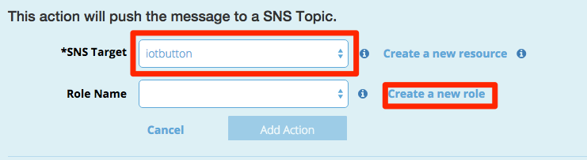
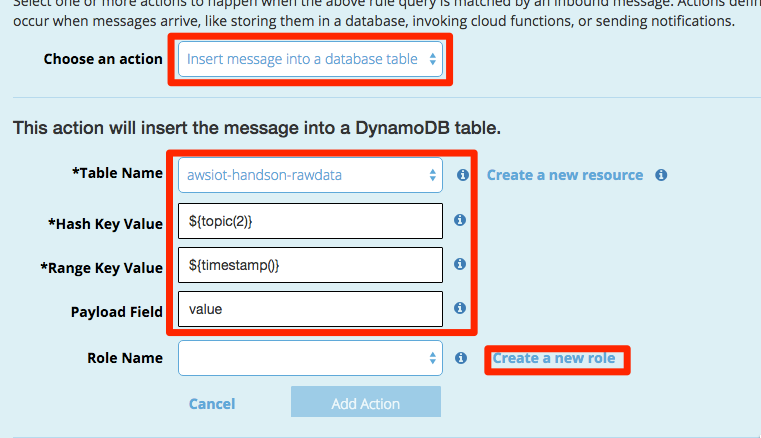
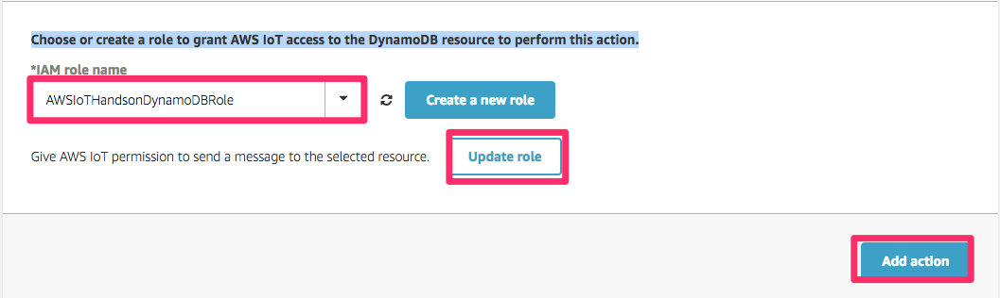
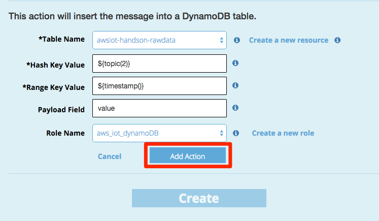
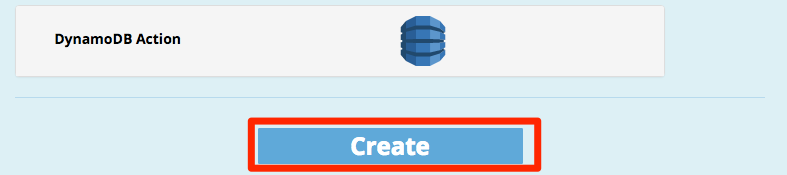

IoTボタンの作成¶
Groveのボタンを利用してIoTボタンを作成します。ボタンを押すとAmazon SNSを通じて指定したメールアドレスにメールを送信するようにアクションを設定します。
ルールの作成¶
edison/buttonトピックに到着したすべてのメッセージに対してアクションを設定します。
“Create a resource”をクリックし、”Create a rule”をクリックします。”Create a rule”の画面で以下の設定値を入力します。
| 項目 | 設定値 |
|---|---|
| Name | SendEmail |
| Attribute | *(アスタリスク) |
| Topic Filter | edison/button |
| Condition | 入力しない |

“Choose an action”のリストから”Send message as a push notification (SNS)”を選択します。次に、SNSのトピックを作成するために[Create a new resource]をクリックします。別の画面にAmazon SNSの設定画面が表示されます。

[Create new Topic]をクリックします。

“Topic Name”と”Display Name”にそれぞれ”iotbutton”と入力し、[Create topic]をクリックします。

トピックの一覧から今回作成したiotbuttonのトピックを選択します。

[Create Subscription]をクリックします。

“Protocol”のリストから”Email”を選択、”Endpoint”にすぐに受信が確認できるメールアドレスを入力し、[Create Subscription]をクリックしてください。
先ほど入力したメールアドレスに確認メールが送信されます。”AWS Notification - Subscription Confirmation”というタイトルのメールを開き、本文中の”Confirm subscription”をクリックします。クリック後、”Subscription confirmed!”の画面が表示されます。
AWS IoTのルール作成画面に戻り、”SNS Target”からiotbuttonトピックを選択します。次に、[Create a new role]をクリックします。
IAMの設定画面が開きますので、[Allow]をクリックしてください。
AWS IoTのルール作成画面に戻り、[Add Action]をクリックします。
SNS Actionが追加されたことを確認し、[Create]をクリックします。
リソースの一覧に作成したルールが表示されることを確認します。
